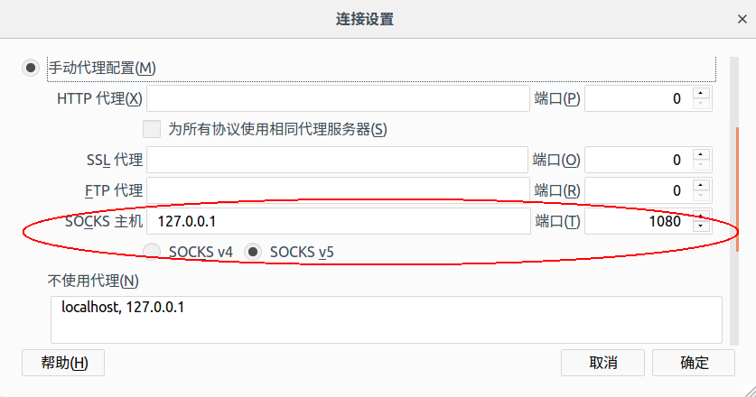

最近在移动硬盘中安装了一个Ubuntu，这样就不需要带着两台电脑到处跑了～这个Ubuntu将长期使用，所以很多基本的环境、工具都需要配置好。其中之一就是shadowsocks科学上网。
由于安装的是Ubuntu 16.04，所以安装shadowsocks异常容易：
sudo apt-get install shadowsocks
一句命令就能够安装完成。不过呢，这个命令安装的shadowsocks版本是2.1.0，略有点老。另外，该方法也只能在Ubunu 16.04+版本上能用。更加通用的办法是：
sudo pip install shadowsocks
因为毕竟Linux上的shadowsocks其实就是一个python软件。
不管用什么方式安装，安装好之后，都可以使用sslocal命令来启动shadowsocks客户端。shadowsocks的配置可以通过命令行参数传入，也可以通过配置文件传入。我编辑了/etc/shadowsocks/config.json文件，内容如下：
{
"server": "144.168.58.91",
"server_port": 10000,
"password": "**********",
"local_address": "127.0.0.1",
"local_port": 1080,
"method": "aes-256-cfb"
}
其中server, server_port和password都需要根据自己的情况设置。之后启动客户端：
sslocal -c /etc/shadowsocks/config.json
由于是一个用户态进程，所以不需要sudo。启动之后，shadowsocks就在localhost的1080端口接受请求了。
对于Firefox浏览器而言，在设置中设置网络代理：

如果服务器没有问题的话，就可以翻墙外出啦！